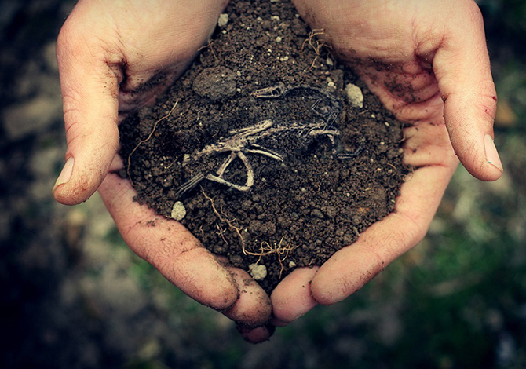

Toprağın ne olduğu, oluşumu, bileşenleri ve genel özellikleri hakkında temel bilgi.
İlk konu olan "Toprağın Tanımı ve Özellikleri" toprağın ne olduğu ve temel özellikleriyle ilgili. Toprak, kayaların fiziksel parçalanması, kimyasal bozunması ve organik madde katılmasıyla oluşan bir karışımdır...
Bilgi almak için tıkla.